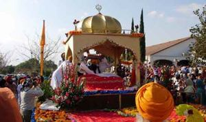
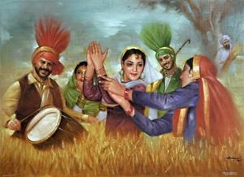

Sikhism ( /ˈsiːkɨzəm/ or /ˈsɪkɨzəm/; Punjabi: ਸਿੱਖੀ, sikkhī), is a monotheistic religion founded during the 15th century in the Punjab region, by Guru Nanak Dev which continued to progress with ten successive Sikh gurus (the last teaching being the holy scripture Gurū Granth Sāhib Ji). It is the fifth-largest organized religion in the world, with approximately 30 million Sikhs. This system of religious philosophy and expression has been traditionally known as the Gurmat (literally 'wisdom of the Gurū'). Punjab, India is the only region in the world with a majority Sikh population.
Sikhs are expected to embody the qualities of a "Sant-Sipāhī"—a saint-soldier. One must have control over one's internal vices and be able to be constantly immersed in virtues clarified in the Guru Granth Sahib.
The principal beliefs of Sikhi are faith in Waheguru—represented by the phrase ik ōaṅkār, meaning one God, along with a praxis in which the Sikh is enjoined to engage in social reform through the pursuit of justice for all human beings. Sikhi advocates the pursuit of salvation in a social context through the congregational practice of meditation on the name and message of God. The followers of Sikhi are ordained to follow the teachings of the ten Sikh gurus, or enlightened leaders, as well as the holy scripture entitled the Gurū Granth Sāhib Ji, which, along with the writings of six of the ten Sikh Gurus, includes selected works of many devotees from diverse socio-economic and religious backgrounds. Guru Gobind Singh Ji, the tenth guru, conferred the leadership of the Sikh community to the Gurū Granth Sāhib and the corporate body of the Khālsā Panth (the Granth and the Panth). Sikhi's traditions and teachings are associated with the history, society and culture of Punjab. Adherents of Sikhī are known as Sikhs (students or disciples) and number over 30 million across the world.
Most Sikhs live in Punjab, India, although there is a significant Sikh diaspora. Until the Partition of India with the division of Punjab and the subsequent independence of Pakistan and later India, millions of Sikhs lived in what is now Pakistani Punjab.
Sikh festivals
Festivals in Sikhism mostly centre around the lives of the Gurus and Sikh martyrs. The SGPC, the Sikh organisation in charge of upkeep of the gurdwaras, organises celebrations based on the new Nanakshahi calendar. This calendar is highly controversial among Sikhs and is not universally accepted. Several festivals (Hola Mohalla, Diwali, and Nanak's birthday) continue to be celebrated using the Hindu calendar. Sikh festivals include the following:
Gurpurabs  are celebrations or commemorations based on the lives of the Sikh gurus. They tend to be either birthdays or celebrations of Sikh martyrdom. All ten Gurus have Gurpurabs on the Nanakshahi calendar, but it is Guru Nanak Dev and Guru Gobind Singh who have a gurpurab that is widely celebrated in Gurdwaras and Sikh homes. The martyrdoms are also known as a shaheedi Gurpurab, which mark the martyrdom anniversary of Guru Arjan Dev and Guru Tegh Bahadur.
Vaisakhi or Baisakhi normally occurs on 13 April and marks the beginning of the new spring year and the end of the harvest. Sikhs celebrate it because on Vaisakhi in 1699, the tenth guru, Gobind Singh, laid down the Foundation of the Khalsa an Independent Sikh Identity.
Bandi Chhor Divas or Diwali celebrates Guru Hargobind's release from the Gwalior Fort, with several innocent Hindu kings who were also imprisoned by Jahangir, on 26 October 1619.
Hola Mohalla occurs the day after Holi and is when the Khalsa Panth gather at Anandpur and display their warrior skills, including fighting and riding.
Ceremonies and customs
Nanak taught that rituals, religious ceremonies, or idol worship is of little use and Sikhs are discouraged from fasting or going on pilgrimages. However, during the period of the later gurus, and owing to increased institutionalisation of the Sikh religion, many ceremonies and rituals did arise. Converts to Sikhism are welcomed. The morning and evening prayers take about two hours a day, starting in the very early morning hours. The first morning prayer is Guru Nanak's Jap Ji. Jap, meaning "recitation", refers to the use of sound, as the best way of approaching the divine. Like combing hair, hearing and reciting the sacred word is used as a way to comb all negative thoughts out of the mind. The second morning prayer is Guru Gobind Singh's universal Jaap Sahib. The Guru addresses God as having no form, no country, and no religion but as the seed of seeds, sun of suns, and the song of songs. The Jaap Sahib asserts that God is the cause of conflict as well as peace, and of destruction as well as creation. Devotees learn that there is nothing outside of God's presence, nothing outside of God's control. Devout Sikhs are encouraged to begin the day with private meditations on the name of God.
Upon a child's birth, the Guru Granth Sahib is opened at a random point and the child is named using the first letter on the top left hand corner of the left page. All boys are given the middle name Singh, and all girls are given the middle name Kaur. Sikhs are joined in wedlock through the anand kāraj ceremony. Sikhs are required to marry when they are of a sufficient age (child marriage is taboo), and without regard for the future spouse's caste or descent. The marriage ceremony is performed in the company of the Guru Granth Sahib; around which the couple circles four times. After the ceremony is complete, the husband and wife are considered a single soul in two bodies.
According to Sikh religious rites, neither husband nor wife is permitted to divorce. A Sikh couple that wishes to divorce may be able to do so in a civil court but this is not condoned. Upon death, the body of a Sikh is usually cremated. If this is not possible, any means of disposing the body may be employed. The kīrtan sōhilā and ardās prayers are performed during the funeral ceremony (known as antim sanskār)
Baptism and the Khalsa
Khalsa (meaning "pure") is the name given by Gobind Singh to all Sikhs who have been baptised or initiated by taking ammrit in a ceremony called ammrit sañcār. The first time that this ceremony took place was on Vaisakhi, which fell on 29 March 1698/1699 at Anandpur Sahib in Punjab. It was on that occasion that Gobind Singh baptised the Pañj Piārē who in turn baptised Gobind Singh himself. Baptised Sikhs are bound to wear the Five Ks (in Punjabi known as pañj kakkē or pañj kakār), or articles of faith, at all times. The tenth guru, Gobind Singh, ordered these Five Ks to be worn so that a Sikh could actively use them to make a difference to their own and to others' spirituality. The 5 items are: kēs (uncut hair), kaṅghā (small comb), kaṛā (circular iron bracelet), kirpān (dagger), and kacchā (special undergarment). The Five Ks have both practical and symbolic purposes.
Sikh people around the globe
Worldwide, there are 25.8 million Sikhs and approximately 75% of Sikhs live in the Indian state of Punjab, where they constitute about 60% of the state's population. Even though there are a large number of Sikhs in the world, certain countries have not recognised Sikhism as a major religion. Large communities of Sikhs live in the neighboring states, and large communities of Sikhs can be found across India. However, Sikhs only make up about 2% of the Indian population.
In addition to social divisions, there is a misperception that there are a number of Sikh sectarian groups, such as Namdharis and Nirankaris. Nihangs tend to have little difference in practice and are considered the army of Sikhism. There is also a sect known as Udasi, founded by Sri Chand who were initially part of Sikhism but later developed into a monastic order.
Sikh Migration beginning from the 19th century led to the creation of significant communities in Canada (predominantly in Brampton, along with Malton in Ontario and Abbotsford, Mission, Lower Mainland, Surrey in British Columbia), East Africa, the Middle East, Southeast Asia, the United Kingdom as well as Australia and New Zealand. These communities developed as Sikhs migrated out of Punjab to fill in gaps in imperial labour markets. In the early twentieth century a significant community began to take shape on the west coast of the United States. Smaller populations of Sikhs are found in within many countries in Western Europe, Mauritius, Malaysia, Fiji, Nepal, China, Pakistan, Afganistan, Iraq, Singapore, Mexico and many other countries.